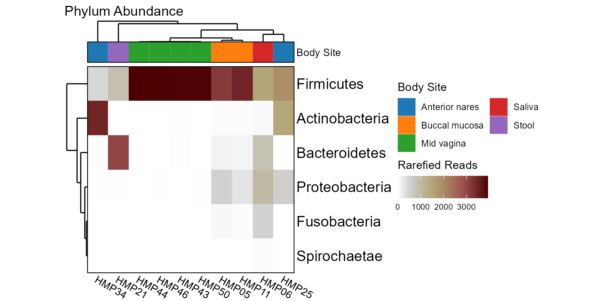

Display taxa abundances as a heatmap.
Usage
taxa_heatmap(
biom,
rank = -1,
taxa = 6,
grid = list(label = "{rank} Abundance", colors = "bilbao"),
color.by = NULL,
order.by = NULL,
limit.by = NULL,
other = FALSE,
unc = "singly",
lineage = FALSE,
label = TRUE,
label_size = NULL,
rescale = "none",
trees = TRUE,
clust = "complete",
dist = "euclidean",
tree_height = NULL,
track_height = NULL,
ratio = 1,
legend = "right",
xlab.angle = "auto",
...
)Arguments
- biom
An
rbiom-class object, or data coercible withas_rbiom().- rank
What rank(s) of taxa to display. E.g.
"Phylum","Genus",".otu", etc. An integer vector can also be given, where1is the highest rank,2is the second highest,-1is the lowest rank,-2is the second lowest, and0is the OTU "rank". Runtaxa_ranks()to see all options for a givenrbiomobject. Default:-1.- taxa
Which taxa to display. An integer value will show the top n most abundant taxa. A value 0 <= n < 1 will show any taxa with that mean abundance or greater (e.g.
0.1implies >= 10%). A character vector of taxa names will show only those named taxa. Default:6.- grid
Color palette name, or a list with entries for
label,colors,range,bins,na.color, and/orguide. See the Track Definitions section for details. Default:list(label = "{rank} Abundance", colors = "bilbao").- other
Sum all non-itemized taxa into an "Other" taxa. When
FALSE, only returns taxa matched by thetaxaargument. SpecifyingTRUEadds "Other" to the returned set. A string can also be given to implyTRUE, but with that value as the name to use instead of "Other". Default:FALSE- unc
How to handle unclassified, uncultured, and similarly ambiguous taxa names. Options are:
"singly"- Replaces them with the OTU name."grouped"- Replaces them with a higher rank's name."drop"- Excludes them from the result."asis"- To not check/modify any taxa names.
Default:
"singly"
Abbreviations are allowed.- lineage
Include all ranks in the name of the taxa. For instance, setting to
TRUEwill produceBacteria; Actinobacteria; Coriobacteriia; Coriobacteriales. Otherwise the taxa name will simply beCoriobacteriales. You want to set this to TRUE whenunc = "asis"and you have taxa names (such as Incertae_Sedis) that map to multiple higher level ranks. Default:FALSE- label
Label the matrix rows and columns. You can supply a list or logical vector of length two to control row labels and column labels separately, for example
label = c(rows = TRUE, cols = FALSE), or simplylabel = c(T, F). Other valid options are"rows","cols","both","bottom","right", and"none". Default:TRUE.- label_size
The font size to use for the row and column labels. You can supply a numeric vector of length two to control row label sizes and column label sizes separately, for example
c(rows = 20, cols = 8), or simplyc(20, 8). Default:NULL, which computes:pmax(8, pmin(20, 100 / dim(mtx))).- rescale
Rescale rows or columns to all have a common min/max. Options:
"none","rows", or"cols". Default:"none".- trees
Draw a dendrogram for rows (left) and columns (top). You can supply a list or logical vector of length two to control the row tree and column tree separately, for example
trees = c(rows = T, cols = F), or simplytrees = c(T, F). Other valid options are"rows","cols","both","left","top", and"none". Default:TRUE.- clust
Clustering algorithm for reordering the rows and columns by similarity. You can supply a list or character vector of length two to control the row and column clustering separately, for example
clust = c(rows = "complete", cols = NA), or simplyclust = c("complete", NA). Options are:FALSEorNA- Disable reordering.An
hclustclass object E.g. fromstats::hclust().A method name -
"ward.D","ward.D2","single","complete","average","mcquitty","median", or"centroid".
Default:
"complete".- dist
Distance algorithm to use when reordering the rows and columns by similarity. You can supply a list or character vector of length two to control the row and column clustering separately, for example
dist = c(rows = "euclidean", cols = "maximum"), or simplydist = c("euclidean", "maximum"). Options are:A
distclass object E.g. fromstats::dist()orbdiv_distmat().A method name -
"euclidean","maximum","manhattan","canberra","binary", or"minkowski".
Default:
"euclidean".- tree_height, track_height
The height of the dendrogram or annotation tracks in multiples (or fractions) of the smaller dimension of the grid cell size. Use a numeric vector of length two to assign
c(left, top)independently. Default:NULL, which computes:tree_height = sqrt(min(dim(mtx))), track_height = tree_height / 4.- ratio
Height/width ratio for entire grid. Default:
1(square).- legend
Where to place the legend. Options are:
"right"or"bottom". Default:"right".- xlab.angle
Angle of the labels at the bottom of the plot. Options are
"auto",'0','30', and'90'. Default:"auto".- ...
Additional arguments to pass on to ggplot2::theme().
Value
A ggplot2 plot.
The computed data points, ggplot command,
and object history are available as $data, $code, and
$history, respectively.
See also
Other taxa_abundance:
taxa_barplot(),
taxa_boxplot(),
taxa_corrplot(),
taxa_matrix(),
taxa_stats(),
taxa_table()
Other visualization:
adiv_boxplot(),
adiv_corrplot(),
bdiv_boxplot(),
bdiv_heatmap(),
bdiv_ord_plot(),
plot_heatmap(),
rare_barplot(),
rare_corrplot(),
rare_multiplot(),
taxa_barplot(),
taxa_boxplot(),
taxa_corrplot()
Examples
library(rbiom)
biom <- hmp50 %>% sample_rarefy() %>% sample_select(1:10)
taxa_heatmap(biom, rank="Phylum", color.by="Body Site")
